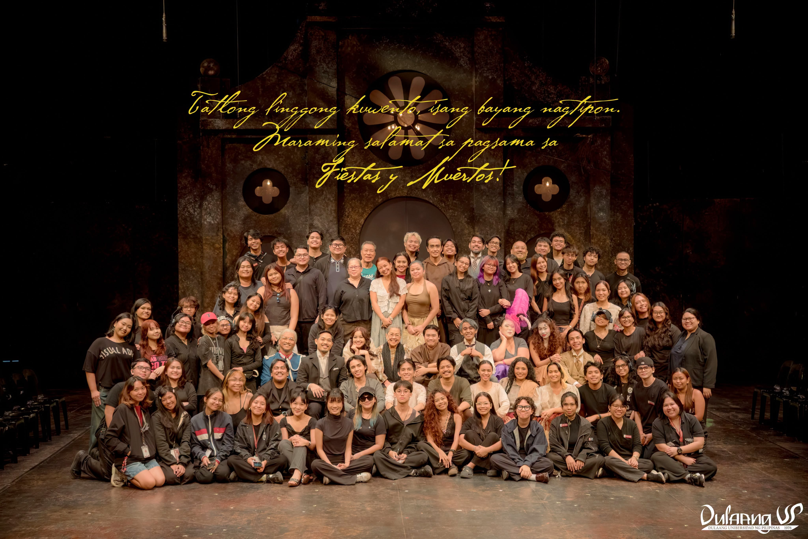
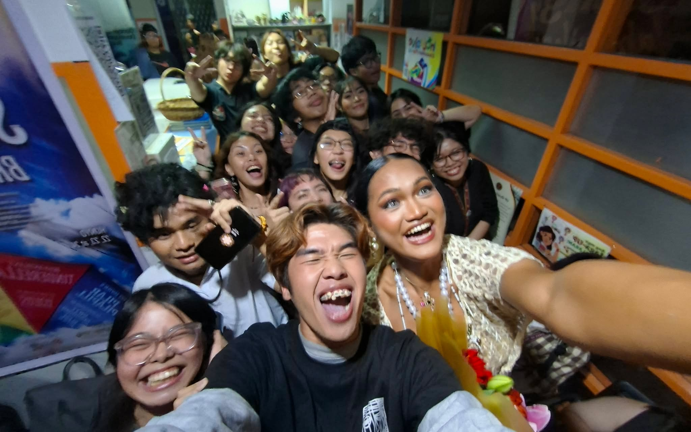
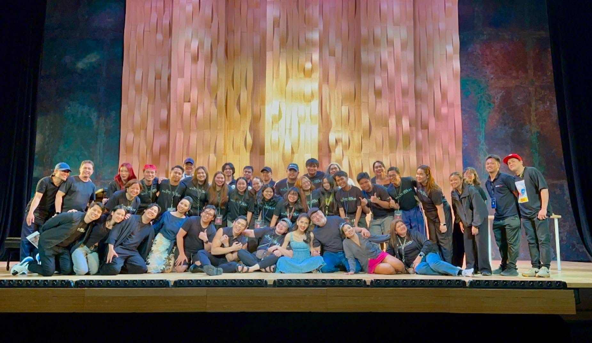

Fiestas y Muertos, Dulaang UP (October - Novemeber 2026)
Student Volunteer, Production | Front of House staff

"Anything you do, let it come from you"
I am a junior in Bachelor of Arts in Multimedia Studies. Outside my academics, I'm a theatre girlie, engaging in both as an audience and sometimes part of the production.
Living and breathing all things theater! Beyond being an avid audience member, I love getting my hands dirty behind the scenes as a volunteer in various theatre productions.
Student Volunteer, Production | Front of House staff

Front of House Staff

Volunteered behind the scenes for the theatrical production of Master Class, starring Menchu Lauchengco-Yulo as Maria Callas. Check out Master Class 2026 Dump!

Email: mrarmachuelo@up.edu.ph
LinkedIn: Mina Grace Armachuelo
Instagram: @msminagrace